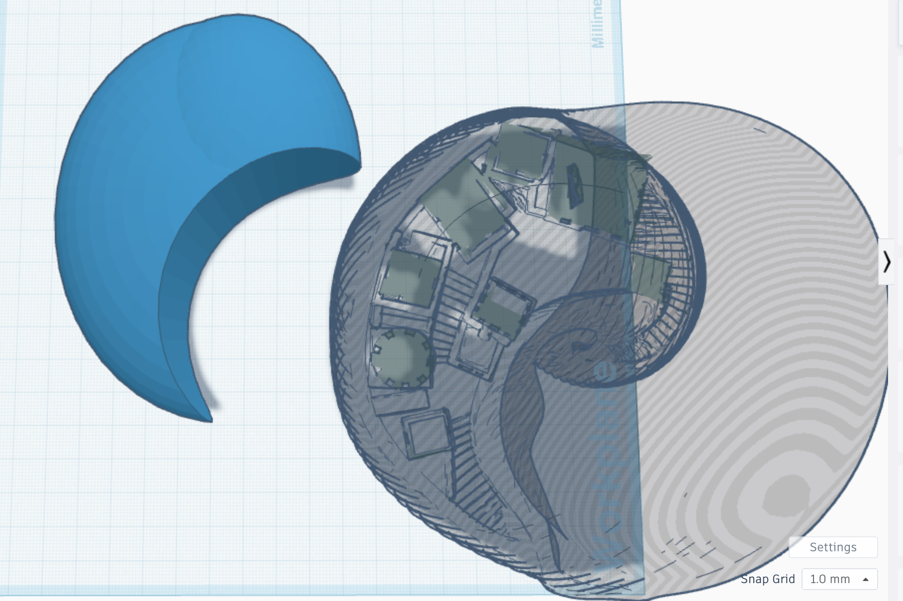
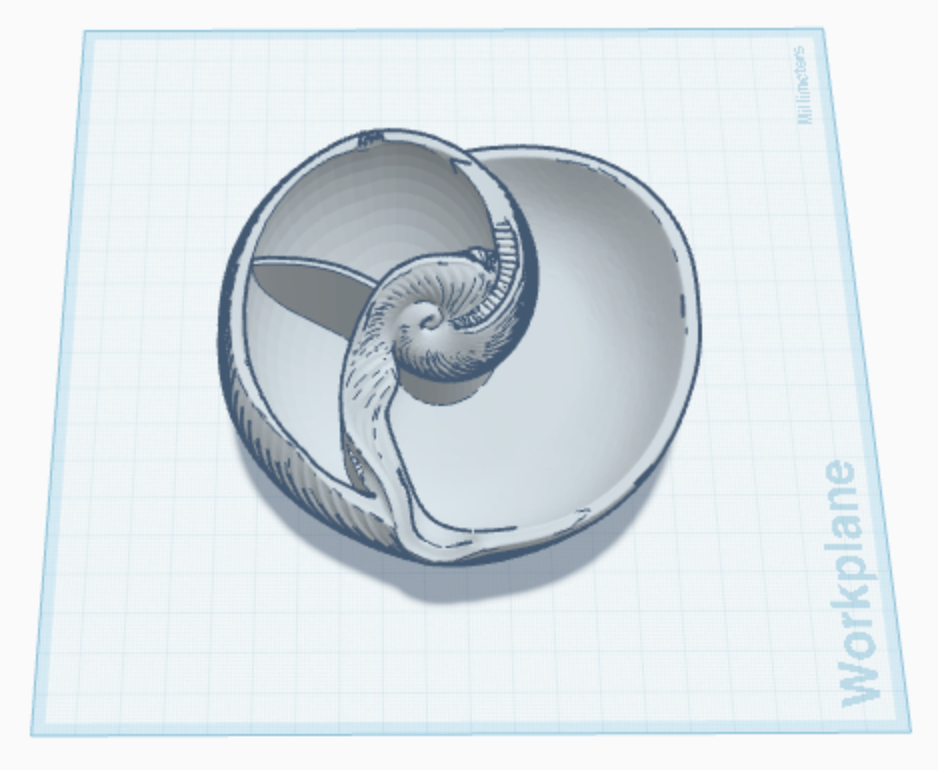
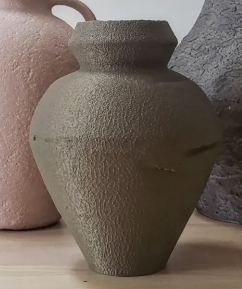
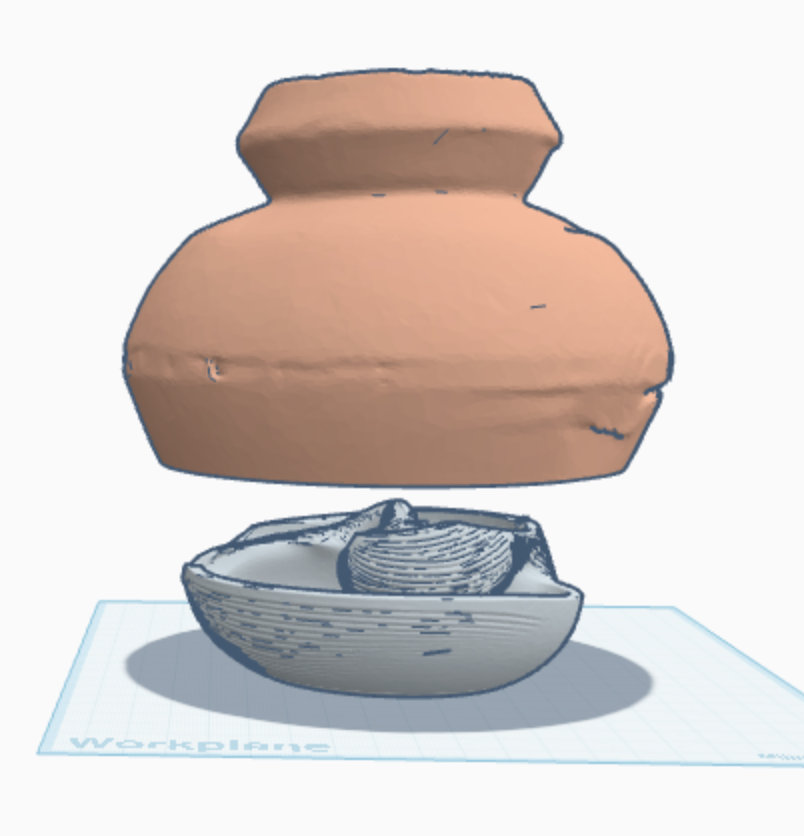
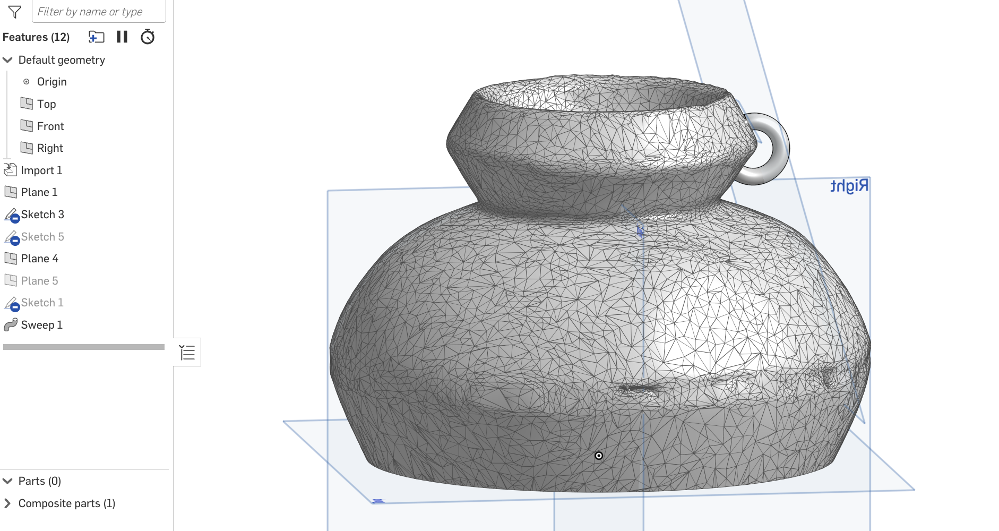
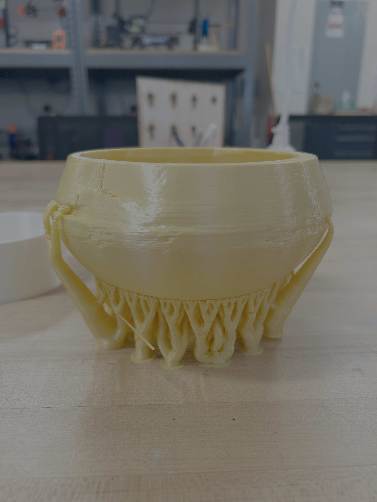
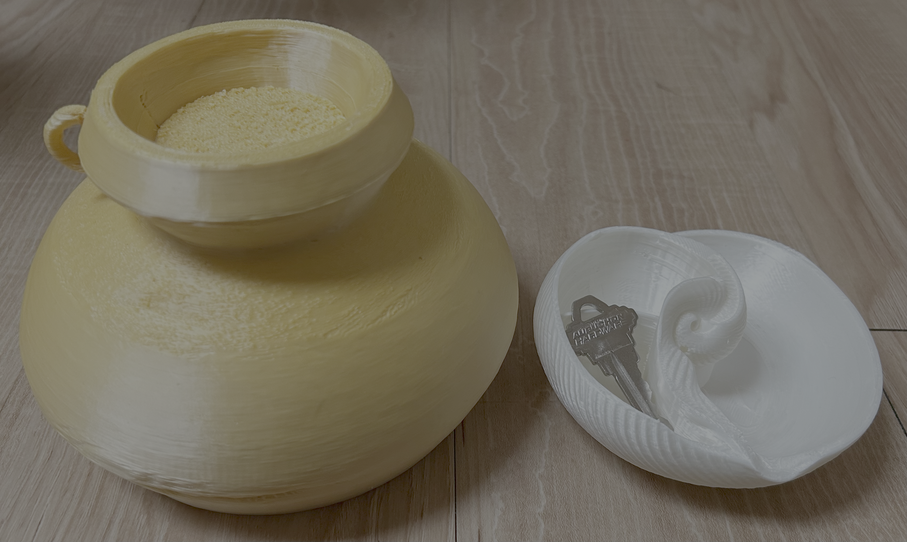
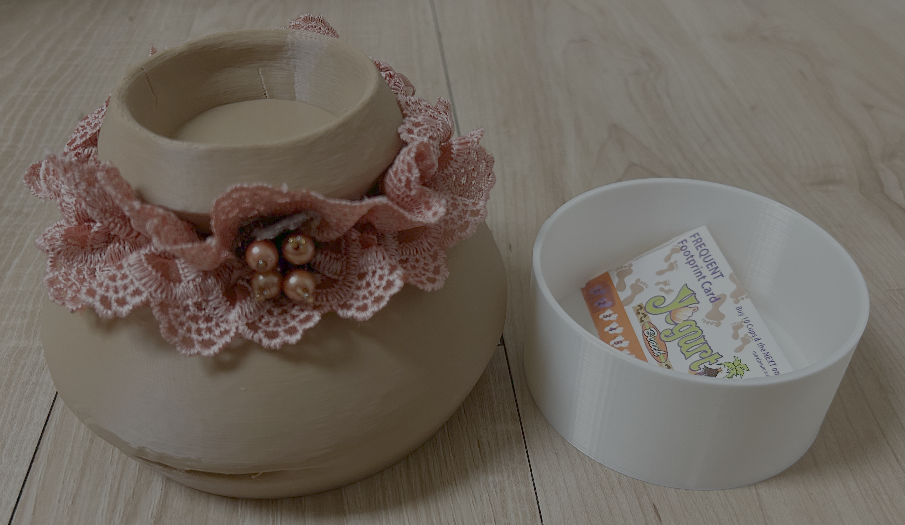

I have a friend who always rushes out the door, forgets her keys and wallet, and then spends ten minutes looking for them. This inspired me to design a secret tray where she could keep her valuables in our entryway.
I worked within the constraints of using the Prusa MINI+, PLA material, and creating something practical. As a student living in a college house, I wanted to design something small yet useful. Through this project, I learned to use MeshLab, OnShape, and how to add and modify supports for successful prints.
1. My idea: make a tray for my friend who always loses her cards and keys. My aesthetic challenge: make the plastic print look natural and earthy to match my friend’s style.
2. I found a beautiful shell on thangs.com, but it cost money, so I reverse image searched and found a free version to download in .stl.
3. I used MeshLab for the first time to simplify the print because it was too complex for TinkerCad. I used the tool called “Simplification: Quadric Edge Collapse Decimation”.
4. Once in TinkerCad, I carved out the building part (left) of the shell so it could be another compartment. Plus, I did a lot of other clean up and tweaks, like compressing it to be slightly shorter and more tray than bowl-like.
5. I used the sketch tool in TinkerCad to make a divider and was ready to print the secret shell tray!
6. Moving onto my tray’s cover: I added an earthy vase, cut off the bottom, and added a fake bottom near the top of the vase that I will eventually fill with a thin layer of fake dirt and flowers.
7. I thought about the motion of taking the vase off the shell tray- will anything get caught? Is there an easy way to grip the vase? Below shows the process and what I ended with in TinkerCad.




8. Below are the two pieces printed separately. The shell came out great, although I excavated a bit too much in some areas so the walls are really thin in some spots. The vase lacked support and therefore a lot of the filament fell through and created a strange indent all around. Although I was happy with my shell, I wanted to modify and reprint my vase.
9. Here comes the most challenging part of the project! I put the vase into OnShape to try the software out and add a handle. The handle can be used to clip or hang stuff off of, like a keychain. This was challenging because OnShape’s learning curve is much longer than TinkerCad’s, and I needed to use a lot of outside resources to figure out how to use it. I started by following along to a video on creating a basic tray in OnShape: https://www.youtube.com/watch?v=l_3k1qMq9AI . I then familiarized myself with how to edit STL files in OnShape: https://www.youtube.com/watch?v=qV3mbThivaI . Once I got the basics down, I followed an “intermediate” level tutorial on making a soap tray: https://www.youtube.com/watch?v=Ug5fWaz28mw . Finally, I was ready to work on my vase and asked ChatGPT to help with my goals.

11. The final prints are below!



Reflection:
For both my Tinkercad and OnShape models, I achieved my goal of creating a functional secret tray with a vase cover. The design worked the way I intended and included the main features I planned. My only issue is with the vase: although my second iteration came out better, adding supports still left a bumpy texture while the rest of the print remained smooth. This made the surface feel less cohesive. The fake bottom of the vase is particularly bumpy, but that is acceptable since it will be hidden by the fake dirt and flowers.
To improve my design, I would also like to get better at using supports so my vase prints smoother and looks cleaner. I would also focus on learning how to use OnShape better, especially for making the handle stronger and positioning it better.
Tinkercad is easier and faster for me to use, which makes it great for simple or quick designs, but it isn’t very precise and can be limiting for more complex shapes. Onshape is more advanced and precise, and I liked using tools like Shell, Fillet, Extrude, and Sweep, but I’m slower with it because I’m still learning.
Overall, this project helped me understand the differences between TinkerCad and OnShape, and showed me that I’m improving as I practice.